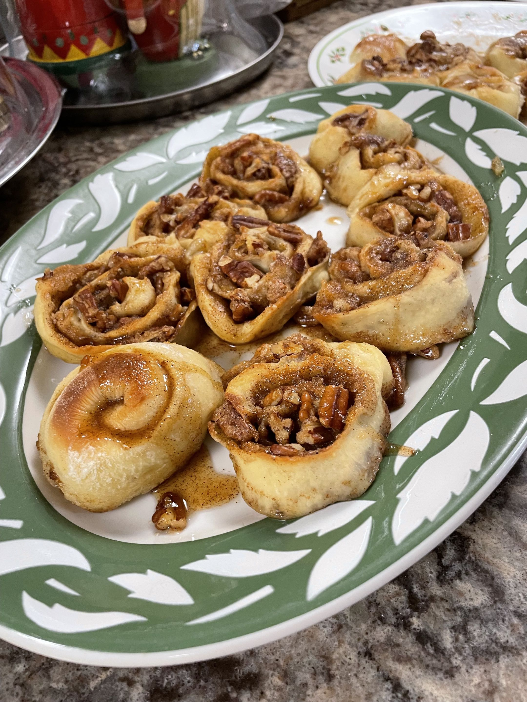

Edith's Cinnamon Rolls

This are my great grandma's yeast roll and cinnamon roll recipes, as written by my grandma. My mom added the instructions for the icing. I love the fact that there's so much family history with this recipy. We like to make these buns around Christmas Eve so that there are some on Christmas morning.
The recipes are written here 'as is' with minor changes for clarity mostly from my mom. This is presented here less as a recipe for you to follow and more as a historical record of my family's cooking.
Yeast Rolls
Makes 15 rolls and 9 cinnamon buns.
- Add 1 yeast cake (package) to 1/2 cup of luke warm water (be sure not hot, cause will kill germs of yeast)
- Put in large mixing bowl 2/3 cup of Crisco, pour in 1 cup of boiling water, stir until spry (Crisco) melts, add 4 level tablespoons of sugar. Add 3/4 tablespoon of salt. Add 2 eggs. Beat mixture with beater (Mixer) until all blended.
- After mixture becomes luke warm (same temperature as yeast mixture) add yeast mixture and stir well. Add yeast mixture and stir well. Add enough flour for a very soft dough -- 4 or 5 cups (mom indicated 4) -- mix well with spoon. Push down from sides, get all in one lump.
- Cover with wet cup towel and put in fridge until ready to make; need to rise to almost double.
Cinnamon Buns
- Make dough like roll dough.
- Roll out dough like for biscuits -- 1/4 to 1/2 inch thick.
- Make mixture of 1/2 stick of butter, 1/2 cup white sugar. 1/2 cup brown sugar, 2 teaspoons cinnamon. Can also add chopped pecans.
- Mix well. Spread mixture over dough.
- Roll dough in one long roll and cut into slices.
- Turn slices (on side) and cook in pie pan -- grease good.
- 400 degrees Bake 10-12 mins until brown on top, let cool and add icing.
- Flip out when done.
Powdered Sugar Icing (added by my Mom)
Makes 1/2 cup (enough to drizzle over one 10 inch tube cake).
Ingredients
- 1 cup sifted powdered sugar
- 1/4 teaspoon vanilla
- 1 tablespoon milk or orange juice
Directions
In a small bowl combine powdered sugar, vanilla, and milk. Stir in additional milk or juice, 1 teaspoon at a time, until it reaches drizzling consistency.
Notes About the Recipe
- Why 15 rolls and 9 cinnamon buns? Because that's how Edith used to do it.
- While the current recipe calls for Crisco, which has been around since 1911, Edith's original called for Spry. Spry was a brand of vegetable shortening from 1936 until the 70's. I had always thought that Spry was first, but maybe it's like how everyone calls any tissue a Kleenex.
- The last step for the yeast rolls originally said to put the covered dough mixture in the 'ice box', which at the rural house my great grandma grew up at, was a below-ground cellar they'd keep frozen food in with blocks of ice they'd collect in the winter. The ice would've lasted through spring. You can read about a uniquely fancy icehouse in Virginia here to get an idea of it.